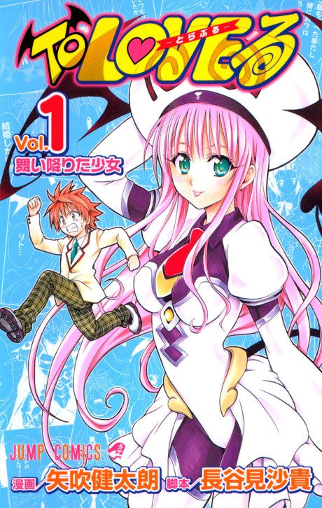
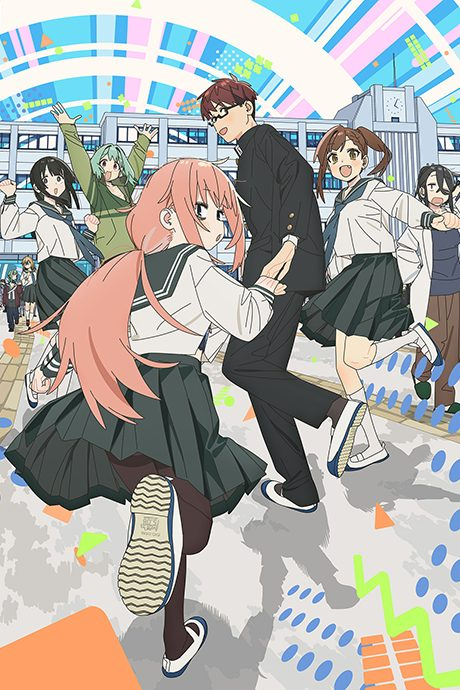
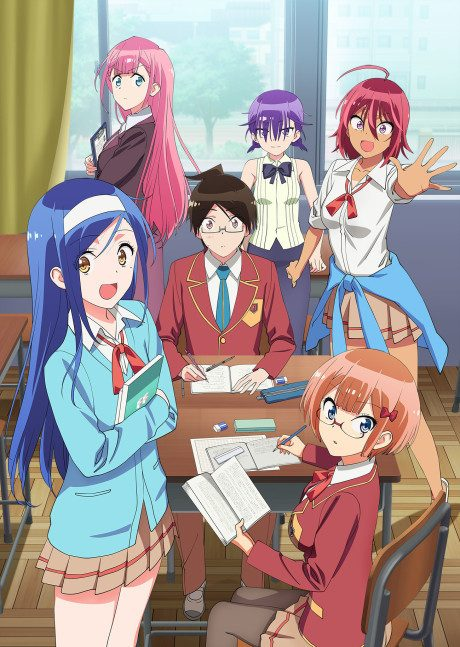
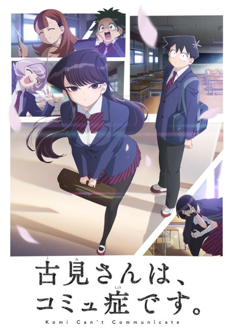

Motto To Love Ru
もっと To LOVEる -とらぶる-
After the anime, read the manga from Chapter 48.
6.9AniList score
—Animeter, no votes yet
36episodes, 3 seasons
3 seasons, 36 episodes
In airing order. Episode numbers on this site count straight through every season, so season 2 starts at episode 13.
1
2010 · TV
Motto To Love Ru
Episodes1–1212 ep
2
2012 · TV
To Love Ru Darkness
Episodes13–2412 ep
3
2015 · TV
To Love Ru Darkness 2
Episodes25–3612 ep
Films, OVAs and specials
Not counted in the episode numbers above.
·
2015 · Special
To Love Ru Darkness 2 Specials
·
2016 · OVA
To LOVE-Ru Darkness 2nd OVA
·
2017 · OVA
To LOVE-Ru: Multiplication - Mae kara Ushiro kara
Sources: AniList
More like Motto To Love Ru

Unclear7.3 Done7.9
Done7.9

Manga Ch. 707.1
Manga Ch. 3167.8
Food Wars!
Manga Ch. 1307.6
Unclear6.7
My Mental Choices Are Completely Interfering With My School Romantic Comedy